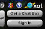
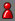
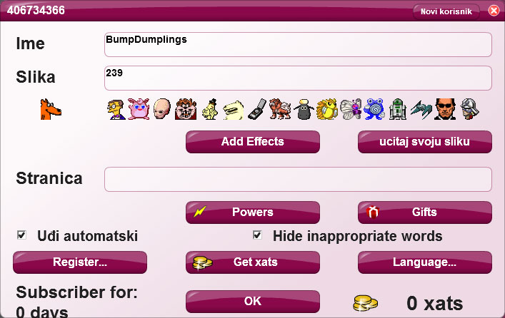

Objašnjenje o chatu :
Prije svega, ako ste preko telefona ovaj chat vam nece raditi, imate link od chata za telefon.
Kada ulazite na website i ako vam se ne pojavi chat,a preko raćunara ste, pritisnite "click to enable flash" i chat će vam proraditi.

Kada se želite prijaviti u chat,pritisnite dugme sign in, kada se prijavite u desnom ćosku ćete vidjeti svoje ime, da bi ste ga promijenili pritisnite na vaše ime, izaćiće vam menu gde možete da promijenite ime i ostale stvari.
Imate podstranicu pravila chata , proćitajte je i poštujte koja ste proćitali !
Da pustite radio, imate ikonicu da pojaćajete zvuk , odmah pored nje se nalazi još jedna ikonica koju možete pojaćati , naravno i nju pojaćajte do kraja.
Nadam se da sam vam objasnio, ukoliko vam nešto nije jasno kontaktirajte me na facebook profilu, imate link iznad chata ili pronadjite link na podstranici "o meni" !
Ako vam muzika, odnosno live ne radi, samo refreshujte stranicu i proradiće, ako i tad ne proradi udjite na link za telefon!
VAŠ RADIO RODJENI KUČIČ KULA
Zlatni pijun – Vlasnik
Bijeli pijun - Moderator
Plavi pijun – Član
Zeleni pijun – Gost
Crveni pijun - Offline korisnici
KAKO PROMJENITI CHAT IME? (detaljnije)
Prilikom ulaska na chat, svakom korisniku dodjeli se ime (nick) dodjeljen od strane chat-a.
Za promjenu imena, kliknite na dodjeljeni nick. (Vaše ime je vama uvijek prvo na listi)
Nakon toga će vam se otvorti prozor prikazan na slici.

Pod NAME (BumpDumplings) – izbrišite dodjeljeni nadimak, upišite svoj i stisnite OK na dnu prozora.
KAKO DODATI NEKOG ZA PRIJATELJA?
Dodavanjem korisnika na Friend Listu, dobivate mogučnost da vidite je li online čak i ako niste u istoj sobi na chatu te da ga kontaktirate preko privatnog chata.